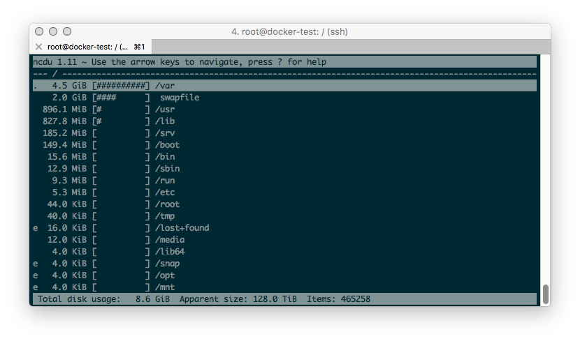

ncdu - ncurses disk usage
At some point harddrive space was cheap, but with the advent of SSDs and cheap “Cloud VMs” that is no longer the case. For example, the cheapest VM on VULTR is $5/month and has a 15 gig SSD drive. It's suddenly very important to maximize drive usage again. This is where ncdu comes in. It displays a nice ncurses interface that visualizes the usage breakdown.
So useful key bindings:
?- helpg- to switch display modesd- to kill a subdirectory tree
There's a commercial app for Mac that I use and love (because my Mac only has a 256 SSD) called DaisyDisk.
/devops